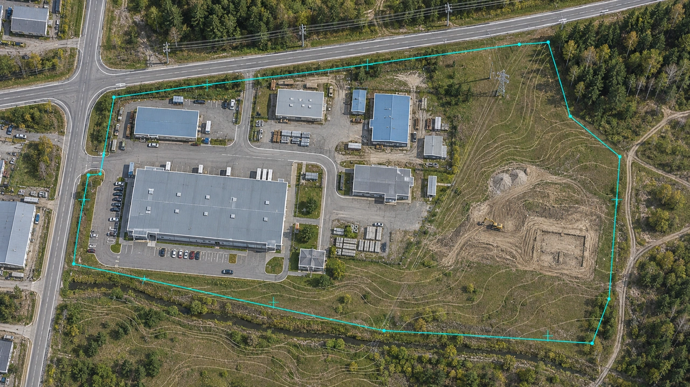
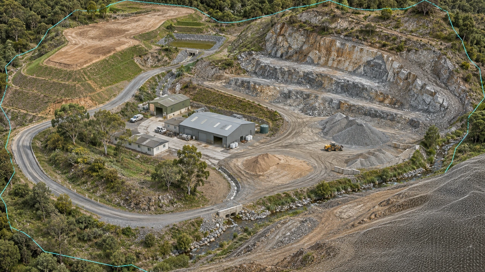
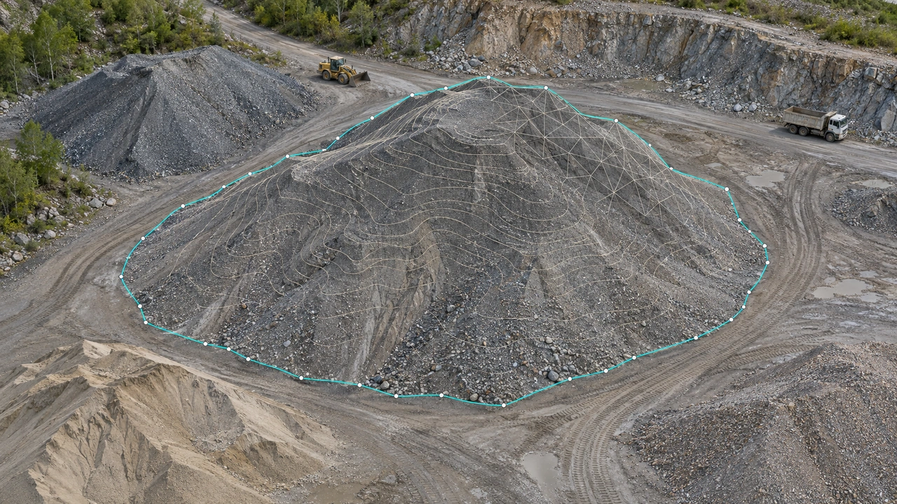
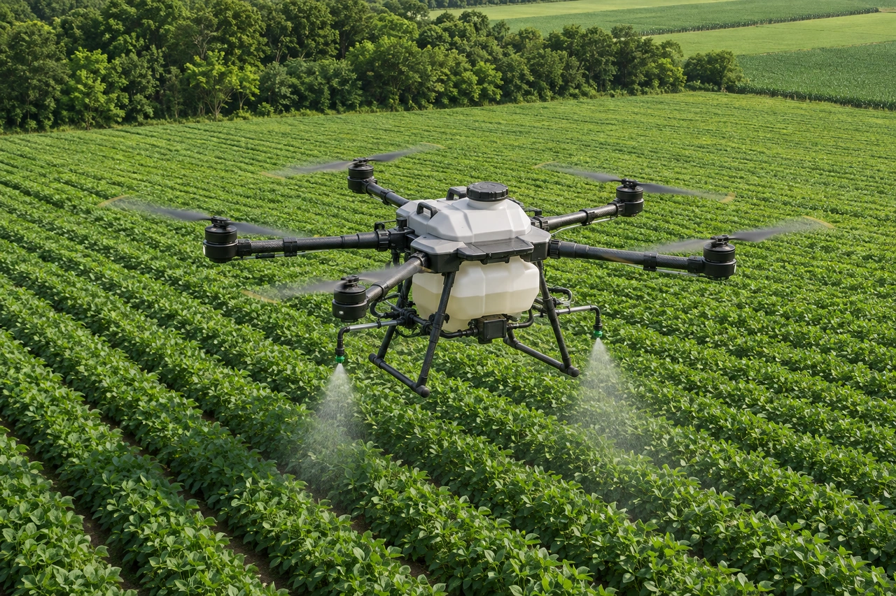
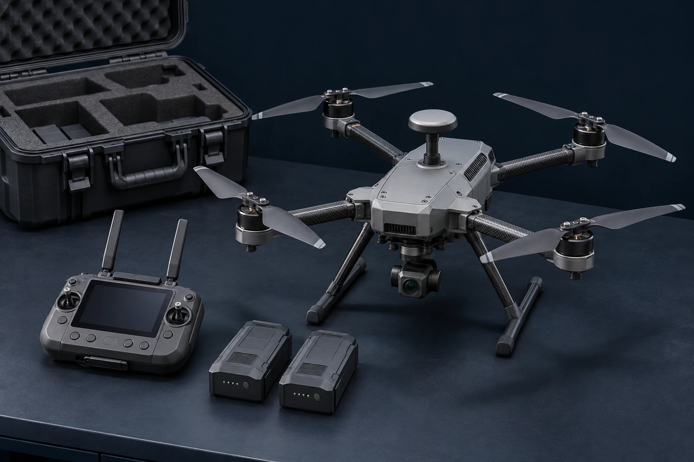
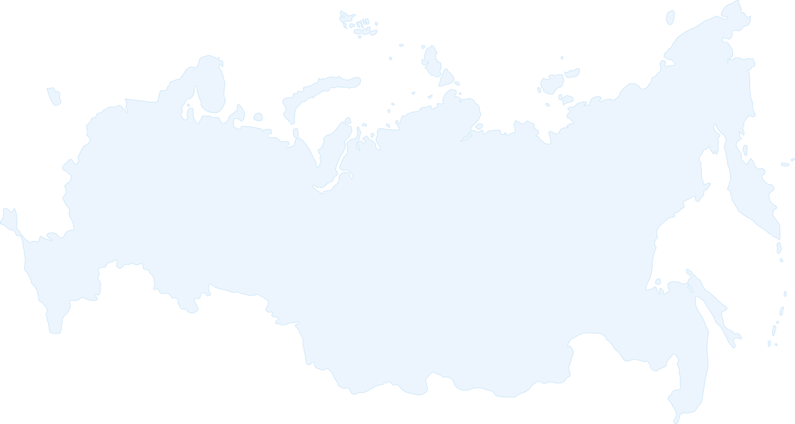
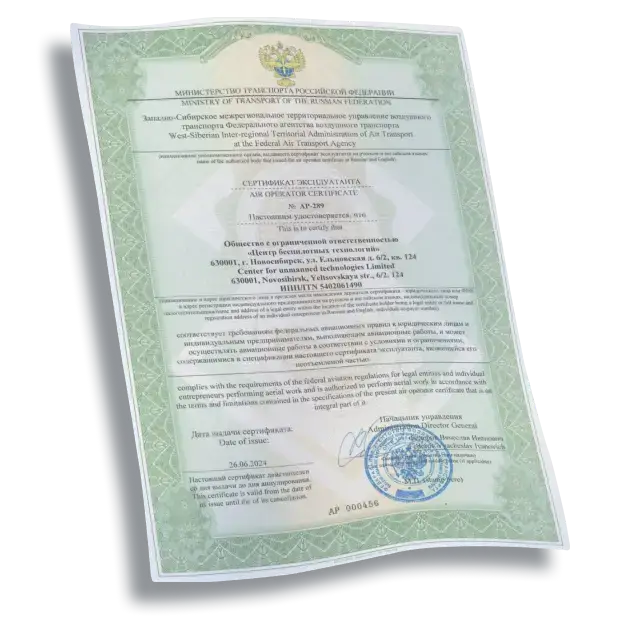
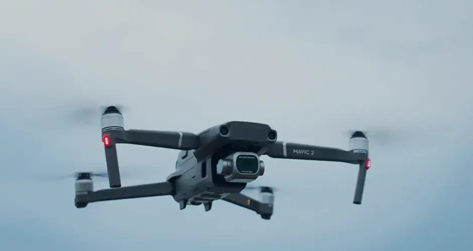
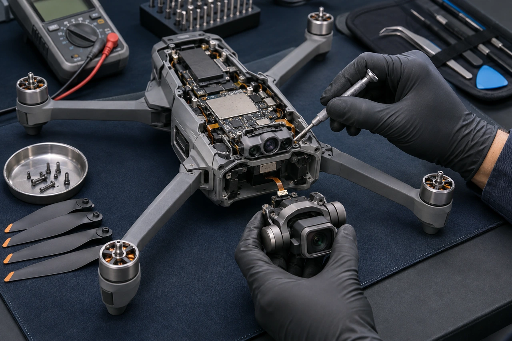

Проектирование / 01
Геодезическая аэрофотосъёмка
Фотооснова территории, топографические материалы и цифровые модели под проектирование.
Аэросъёмка · Лазерное сканирование
Снимаем территории с БПЛА и готовим материалы для проектирования, строительства и учёта объёмов.
Стоимость и сроки — после оценки вашего объекта.
01 / Инженерные услуги
Выберите услугу или начните с задачи. Покажем метод работы, материалы и следующий шаг.
Выберите направление 08 услуг

Проектирование / 01
Фотооснова территории, топографические материалы и цифровые модели под проектирование.

Рельеф и объекты / 02
Пространственные данные о поверхности и объектах для инженерных и инфраструктурных задач.

Учёт запасов / 03
Поверхности и расчётные материалы для учёта на карьерах, отвалах и складах.
Цифровые планы / 04
Перевод исходных материалов в векторные планы с согласованным составом и форматами.

Агрономия / 05
Данные о территории и состоянии посевов для работы агрономической команды.
Защита растений / 06
Внесение средств защиты растений по согласованной технологии и условиям участка.
Презентации / 07
Воздушные ракурсы объектов, территорий и событий для презентационных задач.

Документы / 08
Сопровождение подготовки документов и вопросов организации эксплуатации БПЛА.
02 / Результат для вашей команды
Ортофотопланы, пространственные модели и расчётные поверхности. Состав, точность и форматы согласуем до начала работ.
Геопривязанное изображение для работы с территорией и подготовки проектных материалов.
Поверхность и пространственные данные для анализа, проектирования и расчётных задач.
Модели поверхностей для учёта запасов и контроля изменений по согласованной методике.
Изображения сгенерированы для демонстрации типов материалов. Фактическую выдачу под вашу задачу можно запросить у инженера.
03 / Подтверждённый опыт
Опубликованные проекты ЦБТ: задача, площадь территории и состав подготовленных материалов.
Ортофотоплан, топоплан, цифровая модель местности и материалы для отчёта о геодезических изысканиях.
Инженерно-топографические планы для проектирования существующих и строящихся объектов.
Аэрофотосъёмка и обрисовка территории для учёта горных и отвальных работ.
География работ
Готовность к выезду, логистику и график оцениваем под конкретный объект. Среди опубликованных проектов — Кузбасс, Приамурье и Приморье.
География и опыт центра
04 / Начнём с вашей задачи
Расскажите, что нужно получить. Уточним исходные данные, предложим состав работ и подготовим индивидуальный расчёт.
Можно сразу обсудить задачу с командой
05 / Команда и подход
Полевые работы и обработка данных — части одного проекта. Согласуем задачу до выезда и проверим материалы перед передачей.

Собираем данные на объекте, обрабатываем материалы и помогаем выбрать рабочий состав результата. Обучаем специалистов, подбираем и обслуживаем оборудование.

Объект, исходные данные, требования и условия работы. Зафиксируем состав результата.
На выходе — согласованное заданиеПодготовим полевой этап, выполним съёмку и камеральную обработку материалов.
На выходе — данные для контроляСопоставим материалы с заданием, передадим комплект и разберём замечания.
На выходе — результат для вашей команды06 / Экосистема центра
Освоить технологию, подобрать аппарат или вернуть его к работе — поможем на каждом этапе.
Обучение управлению БПЛА: базовая подготовка, операторские навыки, геодезическая аэрофотосъёмка и 3D-моделирование.

Диагностика, обслуживание и ремонт беспилотных аппаратов. Состав работ определяем после оценки состояния оборудования.

Промышленные БПЛА, полезная нагрузка и комплектация. Подбор с учётом применения, условий и требований вашей команды.
07 / В центре событий
08 / Перед началом
Несколько ответов, чтобы выбрать следующий шаг. Остальное обсудим на примере вашего объекта.
Расположение объекта и задача. Если известны площадь, требования к результату и сроки — укажите их. Когда исходных данных мало, начнём с уточнения. Стоимость рассчитывается индивидуально.
Да. Опишите, для чего нужны материалы и кто будет с ними работать. Команда поможет определить исходные данные и требования, которые нужно закрепить до выполнения работ.
Компания базируется в Новосибирске и выполняет проекты в разных регионах. Возможность выезда, доступ к объекту, логистику и условия съёмки оцениваем отдельно.
Состав зависит от задания: ортофотопланы, топографические материалы, цифровые модели, облака точек или расчётные данные. Точность, координаты, форматы и порядок приёмки согласуем до начала работ.
Расскажите о текущем опыте команды, предполагаемых задачах и условиях применения. Подберём направление и обсудим подходящие программы либо комплектацию.
09 / Есть задача?
Покажите объект или расскажите, что хотите сделать с помощью беспилотных технологий.
Новосибирск / Как нас найти